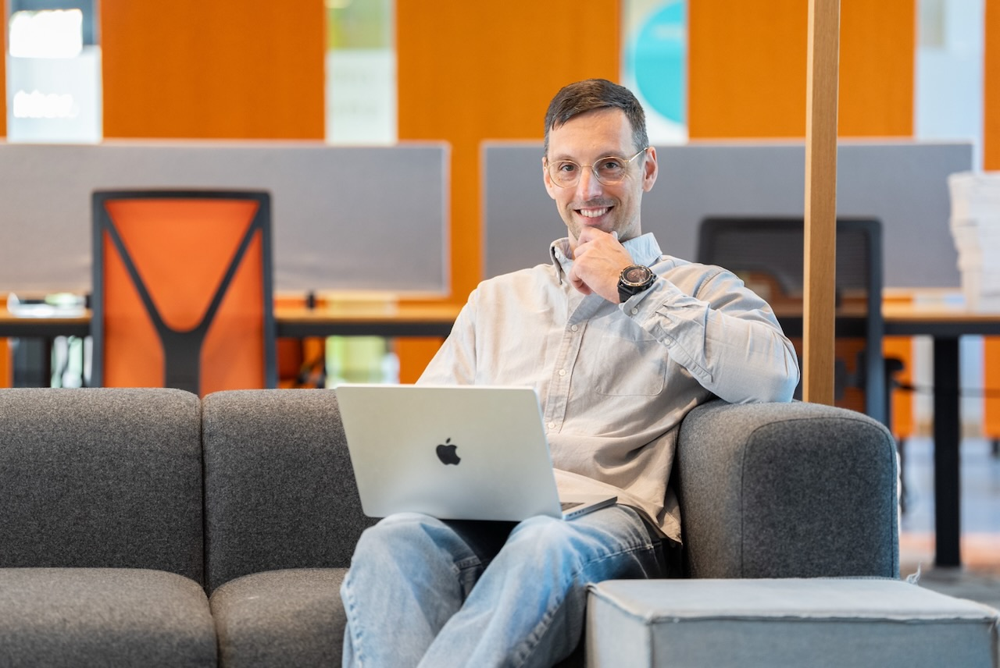

Van wildgroei aan AI-tools naar overzicht en afspraken.
Eerst zien wat er echt gebeurt in je organisatie. Dan een onderbouwde keuze voor tools. En werkafspraken die mensen begrijpen en naleven, omdat ze er zelf aan meewerkten.

Je hebt waarschijnlijk meer AI-tools in huis dan je denkt
Onderzoek van KPMG en de Universiteit van Melbourne onder 48.000 werkenden in 47 landen laat zien hoe alledaags het is. Dit is geen uitzondering, dit is de norm.
gebruikt AI bewust voor het werk
verzwijgt dat AI-gebruik voor de werkgever
geeft toe gevoelige bedrijfsinformatie in publieke AI-tools te hebben gezet
Bron: KPMG & University of Melbourne, Trust, Attitudes and Use of AI, 2025Vier stappen naar AI met grip
Inzicht
Welke AI-tools worden er nu gebruikt, door wie, en wat gaat erin? Zonder inzicht is elk beleid een gok.
Hoe ik dat meetKeuze
Welke tools passen bij jullie werk, budget en privacy-eisen? ChatGPT, Gemini, Claude, Copilot of een Europees alternatief. Onderbouwd, niet op gevoel.
Per platformAfspraken
Samen met de mensen die het werk doen: wat mag, wat niet, en waarom. Het concept dat de organisatie vastlegt als beleid, in taal die iedereen begrijpt.
Workshop werkafsprakenAdoptie en meting
Training voor het team, ambassadeurs intern, en een manier om te meten of het iets oplevert. Anders blijft het bij goede bedoelingen.
AI-trainingZien welke AI-tools je mensen gebruiken. En per tool bepalen wat mag.
BeeSensible is een Europese softwaretool die laat zien welke AI-tools er in je organisatie daadwerkelijk worden gebruikt. Je bepaalt per tool wat is toegestaan, en wie een tool opent ziet die beslissing meteen. Zo wordt beleid iets wat in de praktijk werkt, niet een document in een la.
Ik ben partner van BeeSensible en help organisaties met de invoering: van de eerste meting tot de afspraken die eruit volgen en de training die het team nodig heeft.
Inzicht
Welke tools, hoe vaak, door welke teams.
Beslissen
Per tool: toegestaan, niet toegestaan, of met voorwaarden.
Helpen
De medewerker ziet de afspraak op het moment dat het ertoe doet.
Onderbouwen
Aantoonbaar voor AVG, AI Act en interne audits.
Over beleid en tools
Schrijf jij ons AI-beleid?
Nee, dat doet de organisatie zelf. Beleid werkt alleen als het van jullie is. Ik zorg voor het inzicht, de kennis en de werkafspraken uit het team waarmee jullie het beleid kunnen opstellen, en ik lees graag mee.
Moeten we alles verbieden wat niet zakelijk is gelicentieerd?
Meestal niet. Verbieden zonder alternatief werkt averechts: mensen gaan het stiekem doen. Beter is een goed alternatief bieden, duidelijk zijn over wat er nooit in mag, en dat meetbaar maken.
Is een Europese tool altijd veiliger?
Niet automatisch, maar het scheelt in afhankelijkheid en in de juridische complexiteit van datadoorgifte. Ik kijk per situatie welke combinatie van tools, instellingen en afspraken past bij jullie risicoprofiel.
Wil je weten welke AI-tools er nu in je organisatie draaien?
In een kennismaking bespreken we hoe je snel inzicht krijgt en wat de logische vervolgstap is. Vrijblijvend.
Liever direct contact?
Bellen of mailen mag altijd. Ik reageer binnen één werkdag.
- E-mailinfo@matthijsvanmeurs.nl
- Telefoon+31 6 41 01 10 64
- LinkedInVolg of stuur een bericht